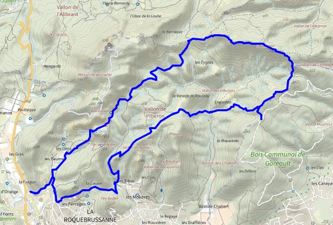

La Loube et l'amarron, cap sur les sentiers du massif de la Sainte-Baume
Le massif de la Sainte-Baume est une destination idéale pour les amateurs de randonnée. La Loube et l'Amarron sont deux sommets situés dans cette région, qui offrent des vues magnifiques sur les environs.
Cap vers le cap sauvage !
Pour accéder aux sentiers du massif de la Sainte-Baume , vous pouvez vous rendre dans l'un des nombreux points de départ, tels que le parking de la Sainte-Baume ou le parking de l'Hostellerie de la Sainte-Baume.
L'ascension de La Loube est une randonnée de niveau moyen qui offre des panoramas époustouflants sur la Provence verte. Vous pouvez emprunter le sentier balisé qui mène au sommet, en passant par la grotte de l'Ermitage. Prévoyez environ 3 à 4 heures pour cette randonnée.
Quant à l'Amarron, il s'agit d'une randonnée plus longue et plus difficile, qui demande une bonne condition physique. Le sentier vous mènera à travers des paysages variés, incluant des forêts de chênes et des falaises. Comptez environ 6 à 7 heures pour atteindre le sommet et redescendre.
Quel materiel por partir ?
N'oubliez pas de prendre des précautions avant de partir en randonnée, comme vérifier la météo, prévoir de l'eau et de la nourriture, ainsi que d'être bien équipé. Pensez aussi à respecter l'environnement en ne laissant aucun déchet derrière vous et en suivant les consignes de sécurité.
Profitez de votre exploration des sentiers du massif de la Sainte-Baume et de ses sommets, La Loube et l'Amarron !
